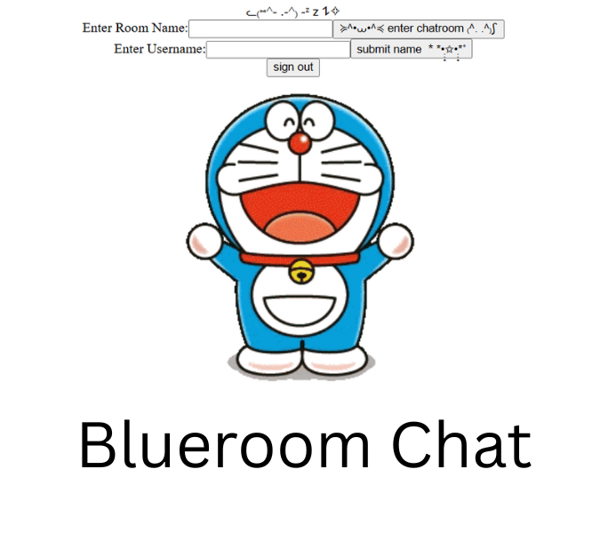
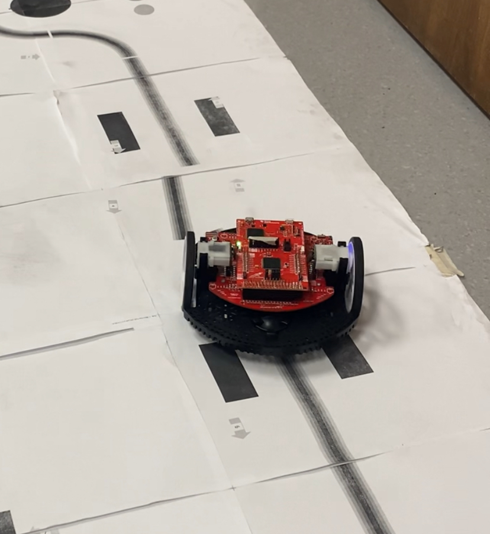
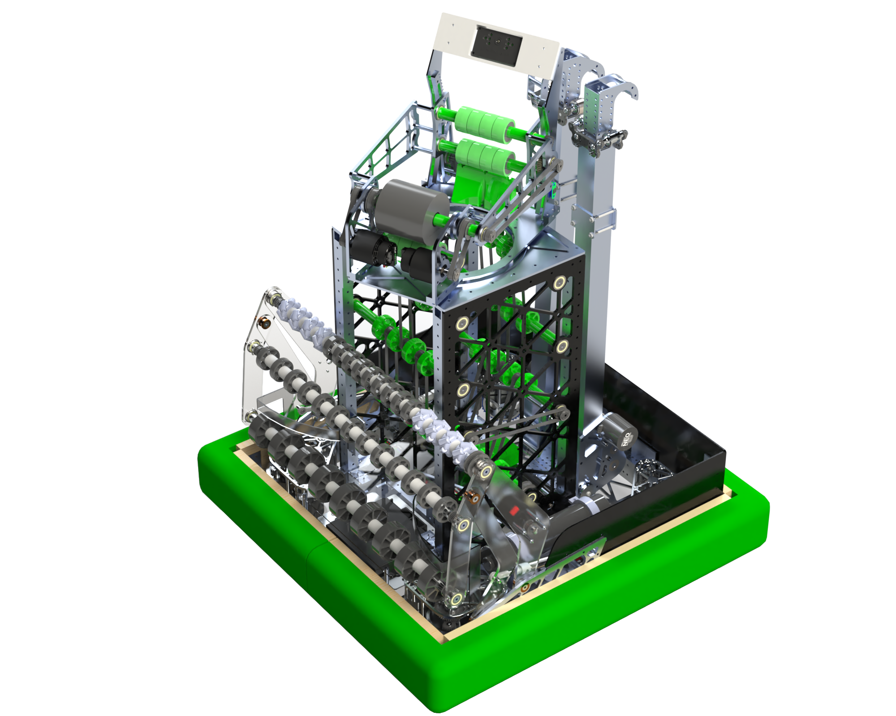
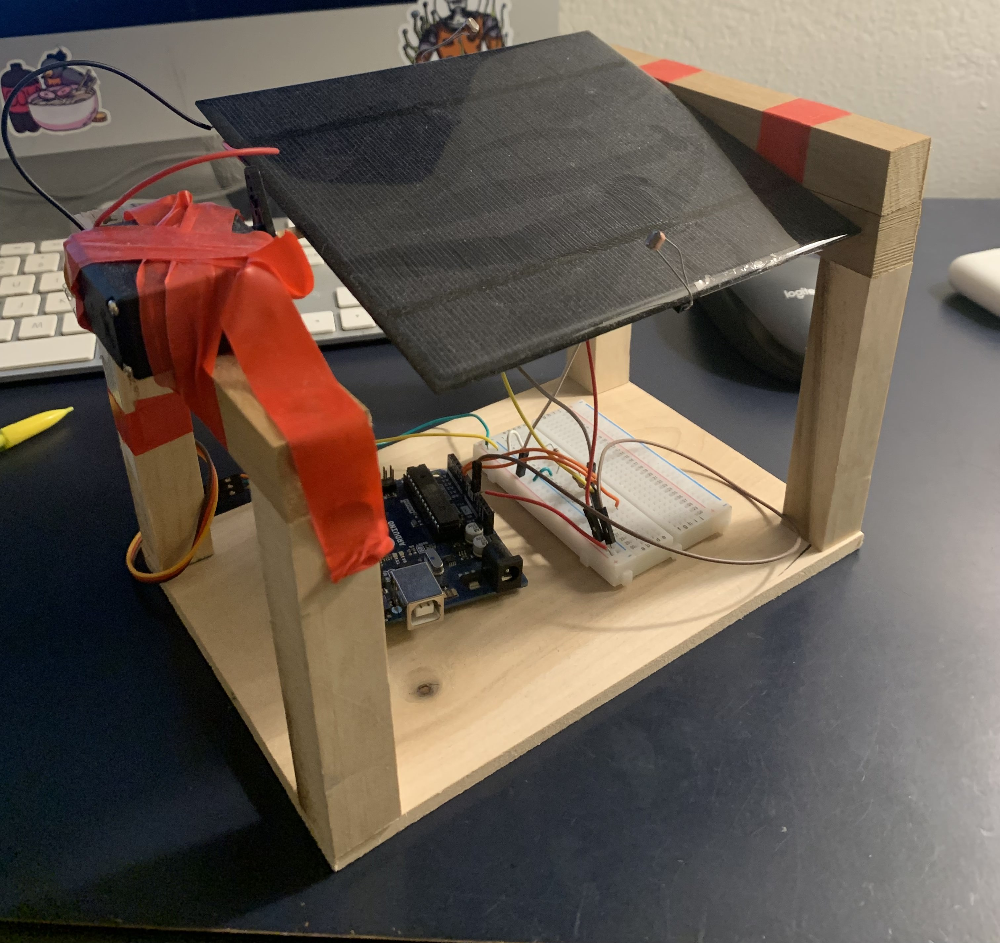
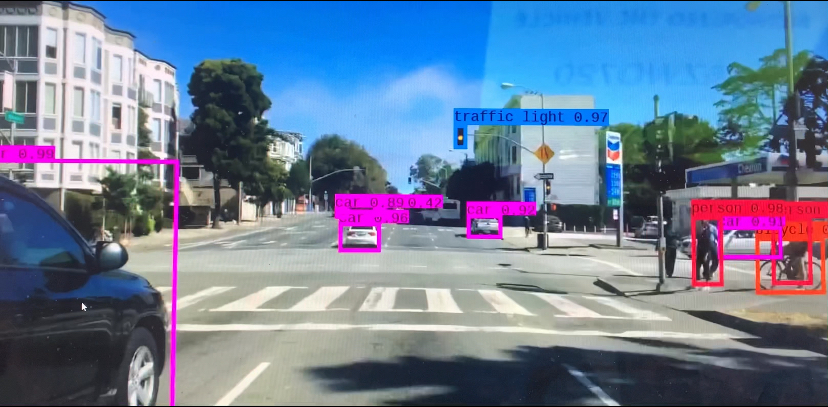

My Projects







Developed an interactive digital hammer game inspired by traditional carnival strength testers, using a Raspberry Pi and Python. The game featured a beam break sensor to detect player input (simulating a hammer strike) and a vertical LED strip to visually represent the force of the hit. Designed custom LED animations for different game states, including idle mode, active strike visualization, and victory or failure feedback. Programmed responsive game logic in Python to calculate and display results in real time, ensuring smooth transitions and engaging visual effects. Consistently used at UCLA hill events.
Developed control software for a 3-stage robotic arm used in an FRC (FIRST Robotics Competition) robot that competed at the 2023 World Championship in Houston. The arm's motion was governed by inverse kinematics and coordinated multi-joint control, enabling smooth and accurate positioning. Implemented and fine-tuned custom PID control loops for each joint, accounting for joint coupling and dynamic load variations. Emphasized real-time responsiveness and stability under high-speed, high-stress conditions. This system enabled the robot to reliably manipulate game pieces with precision during autonomous and teleoperated periods, contributing to competitive performance at the highest level of play.